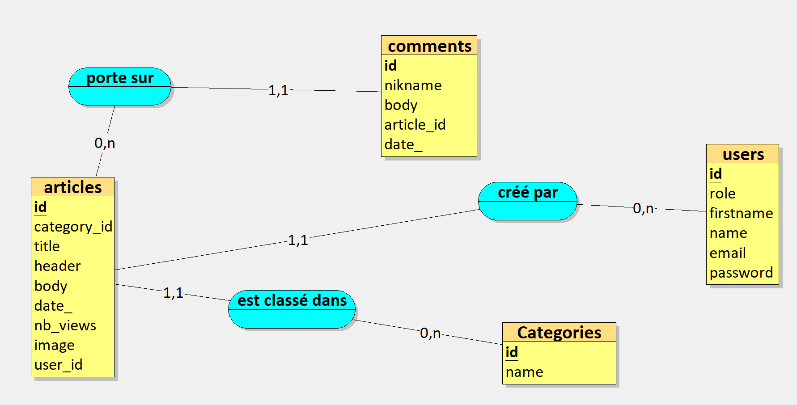

Description
TechOlympics Blog est une plateforme en ligne dédiée à la couverture des technologies associées aux Jeux Olympiques de 2024. Ce site web permet aux passionnés de technologies et de sports de découvrir les dernières innovations, actualités technologiques et analyses approfondies liées à l'événement sportif mondial.
Fonctionnalités clés :
1-Contenu Éditorial de Qualité :

TechOlympics Blog propose un contenu rédactionnel de qualité, couvrant les technologies de pointe utilisées lors des Jeux Olympiques de 2024, telles que la réalité virtuelle, l'intelligence artificielle, les capteurs connectés, etc.
2-Base de Données MySQL :
Nous avons utilisé une base de donnée MySQL, conçue avec la méthodologie MERISE et les cardinalités, pour assuré une gestion structurée des données, stockant efficacement les articles, les informations sur les technologies, les auteurs et les commentaires.

3-Architecture MVC :

L'application est développée en utilisant une architecture MVC (modèle-vue-contrôleur), séparant clairement les responsabilités entre le modèle (gestion des données), la vue (interface utilisateur) et le contrôleur (logique métier). Ce qui permet entre autre une gestion plus efficace du code et une évolution simplifiée.
4-Système d'Authentification :

Les utilisateurs peuvent créer un compte, se connecter de manière sécurisée et bénéficier d'une expérience utilisateur personnalisée Avec l'utilisation des sessions du hashage de mot de passe. L'authentification garantit également la sécurité des données et permet aux utilisateurs de commenter, noter et participer à la communauté.
5-Système CRUD :
Grâce à un backend PHP basé sur l'architecture MERISE (Méthode d'Étude et de Réalisation Informatique pour les Systèmes d'Entreprise), l'application offre un système CRUD (Create , Read, Update, Delete) pour la gestion du contenu du blog. Les éditeurs peuvent créer, modifier, supprimer et afficher des articles en temps réel. Nous avons utiliser les requete sql pour realiser cela.

6-Sécurité et Confidentialité :
TechOlympics Blog assure la sécurité des données des utilisateurs grâce à des protocoles de sécurité avancés https csref avec les tokens
TechOlympics Blog s'engage à être la référence pour les passionnés de technologies et de sports intéressés par les innovations technologiques aux Jeux Olympiques de 2024. Avec MySql, php, et un système d'authentification robuste, l'application offre une expérience complète, alliant information de qualité et interactivité.